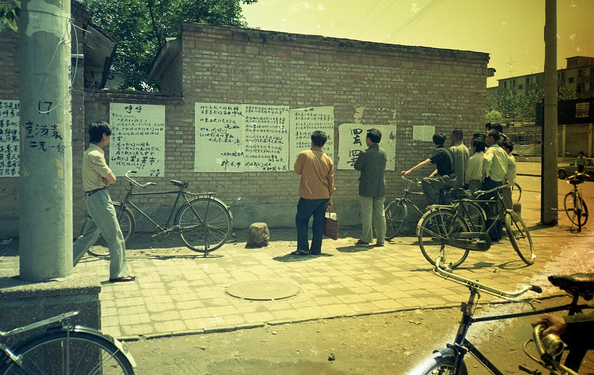

Reading posters on Zhongguancun Street
在中关村大街阅读墙报

People stop to read handwritten posters on Zhongguancun Street in the days after the crackdown.
镇压后的几天，人们在中关村大街驻足阅读手写墙报。
Photo record
- Date
- June 7–11, 1989
The photographer’s description gives this range. The Commons date field lists June 7.
- Location
- Zhongguancun Street, Haidian, Beijing
- Photographer
- Daiwenchen
- Source
- Wikimedia Commons record Full-size source file
- Reuse
- CC BY-SA 4.0
The detail image is a Wikimedia Commons resize. The archive uses a smaller copy in the gallery.